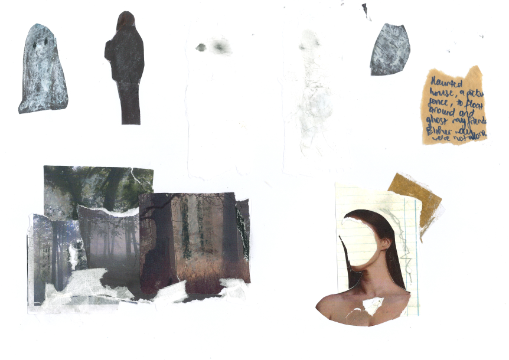

An interactive web inspired by my poem, exploring loneliness as an intangible companion. It invites viewers to feel rather than just read, using gentle movement, image layering, and quiet interaction.

The site is live here.
The final work captures the fragile, often silent ways we carry loneliness: in memory, in silence, and in our relationships.
Inspired by analog collage, the visual direction embraces imperfection: tearing, layering, obscuring, and stitching fragments together, much like the way memory works.

Physical textures such as paper, watercolor, and tissue were scanned and digitally manipulated, blending the tactile with the intangible to mirror emotional depth.
.png)
.png)
.png)
.png)
Developed during my first year of the Digital Media program at RMIT University, the project recieved a High Distinction for its sensitive exploration of loneliness through collage and code.
Credits: All images sourced from Unsplash. Image manipulating and poem written by me.I met loneliness on a rainy day
- Collage
- Poetry
- HTML & CSS & JS